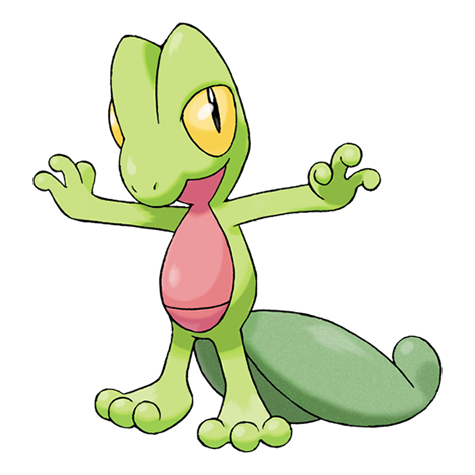
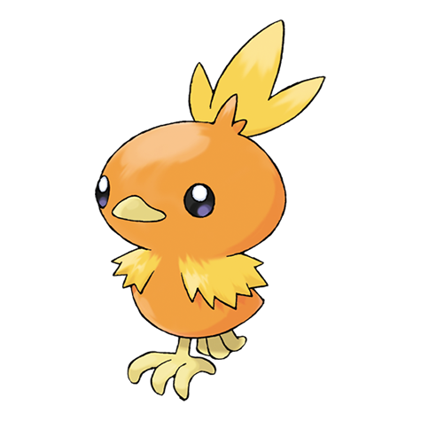
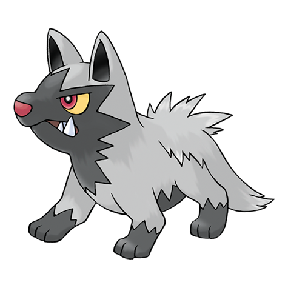
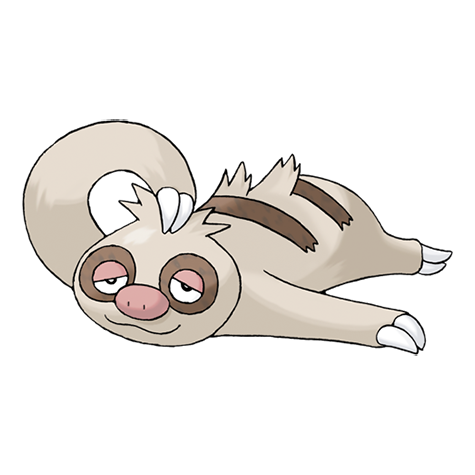
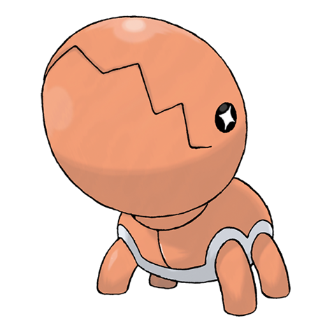

Pokédex entries
Pokédex
This page shows you what pokémon that are in this region
Pokemons in this region
Showing all 8 Pokémon.
#0252
Treecko

Type: Grass
Planned role: Starter option
It makes its nest in a giant tree in the forest. It ferociously guards against anything nearing its territory. It is said to be the protector of the forest's trees.
#0255
Torchic

Type: Fire
Planned role: Starter option
If attacked, it strikes back by spitting balls of fire it forms in its stomach. A TORCHIC dislikes darkness because it can't see its surroundings..
#0258
Mudkip

Type: Water
Planned role: Starter option
On land, it can powerfully lift large boulders by planting its four feet and heaving. It sleeps by burying itself in soil at the water's edge.
#0261
Poochyena

Type: Dark
Planned role: Wild Encounter
It savagely threatens foes with bared fangs. It chases after fleeing targets tenaciously. It turns tail and runs, however, if the foe strikes back.
#0280
Ralts

Type: Psychic and Fairy
Planned role: Wild Encounter
A RALTS has the power to sense the emotions of people and POKéMON with the horns on its head. It takes cover if it senses any hostility.
#0287
Slakoth

Type: Normal
Planned role: Wild Encounter
It sleeps virtually all day and night long. It doesn't change its nest its entire life, but it sometimes travels great distances by swimming in rivers.
#0304
Aron

Type: Steel and Rock
Planned role: Wild Encounter
A POKéMON that is clad in steel armor. A new suit of armor is made when it evolves. The old, discarded armor is salvaged as metal for making iron products.
#0328
Trapinch

Type: Ground
Planned role: Wild Encounter
Its big jaws crunch through boulders. Because its head is so big, it has a hard time getting back upright if it tips over onto its back.
#0374
Beldum

Type: Steel and Psychic
Planned role: Wild Encounter
Its big jaws crunch through boulders. Because its head is so big, it has a hard time getting back upright if it tips over onto its back.